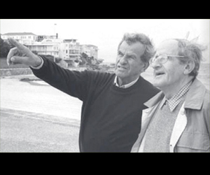

EL INICIO DE EISHEL
1948 - 1949 Se plantea la necesidad de construir un hogar para personas de la tercera edad. Se adquiere una casa en Cuernavaca para este fin.
Hoy en día, Eishel es una institución Intercomunitaria donde habitan felizmente miembros de todo el Yishuv. Como parte del Consejo Intercomunitario para la Atención del Adulto Mayor, Eishel ha asumido el liderazgo para cubrir la necesidad de proveer una residencia para Adultos Mayores digna y atractiva en la Comunidad Judía, focalizando los esfuerzos de todas las comunidades.
Se plantea la necesidad de construir un hogar para personas de la tercera edad. Se adquiere una casa en Cuernavaca para este fin.
El grupo de damas voluntarias organiza diversas, actividades, tales como festividades judías y visitas de escuelas.
Se constituye el primer patronato bajo la presidencia del Sr. Max Shein. Se innova el nombre de la institución quedando con el nombre con el que se cuenta actualmente “Eishel Nuestro Hogar A.C.”
EMITIMOS RECIBOS OFICIALES DE SUS DONATIVOS
.jpg)
Nuestra institución cuenta con un equipo multidisciplinario integrado por médicos, psicólogos, fisioterapeutas, enfermeras, cuidadoras y personal operativo, garantizando una excelente atención que gira en torno a las necesidades de nuestros residentes.